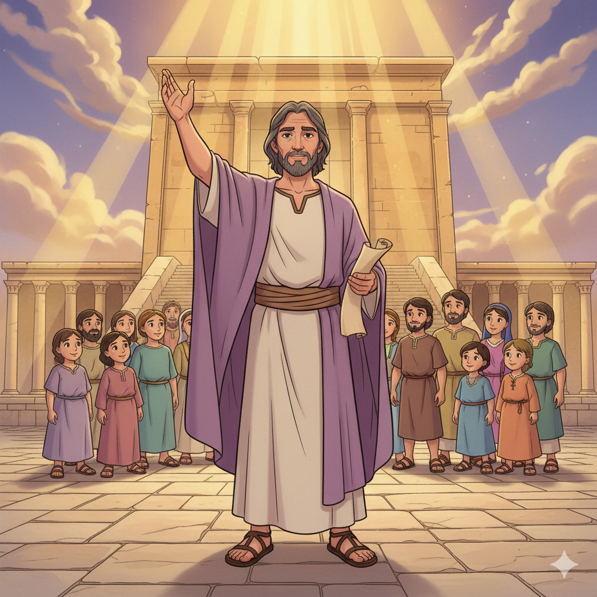
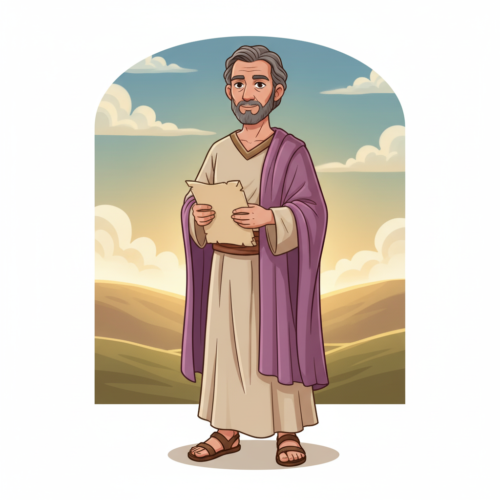
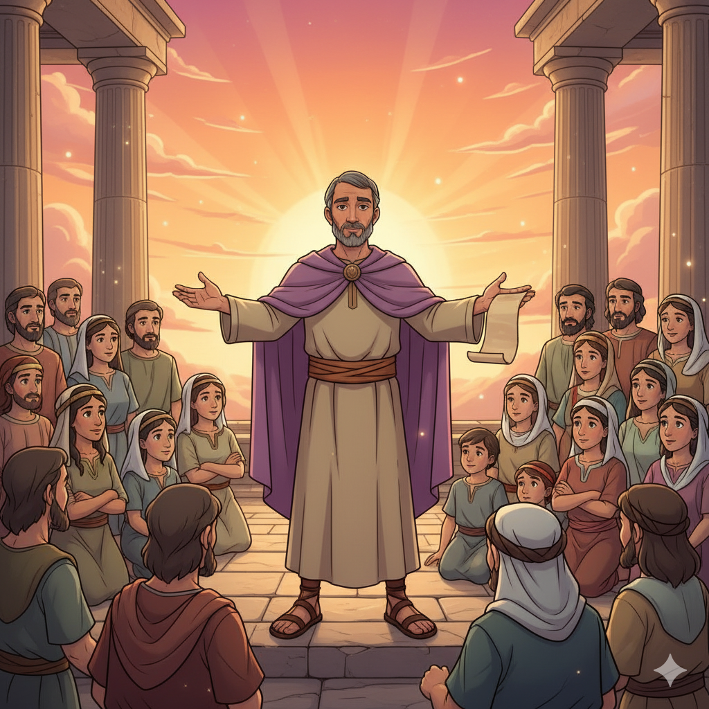
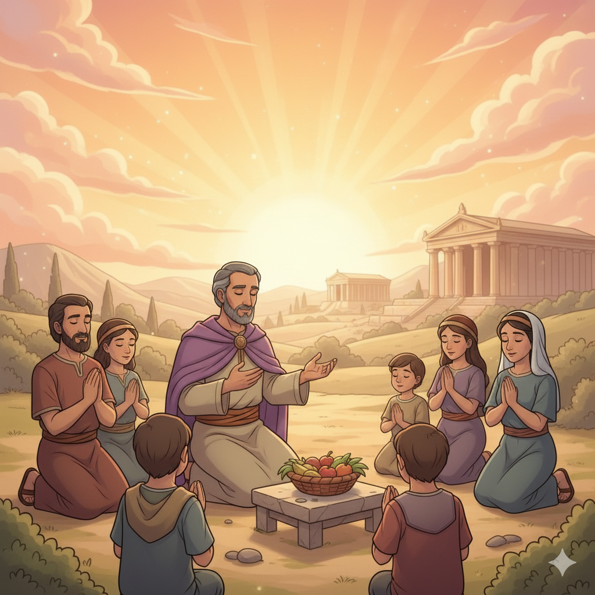
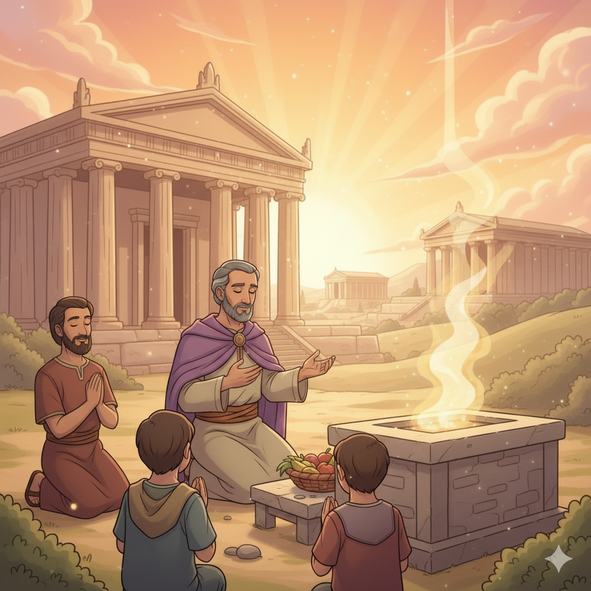
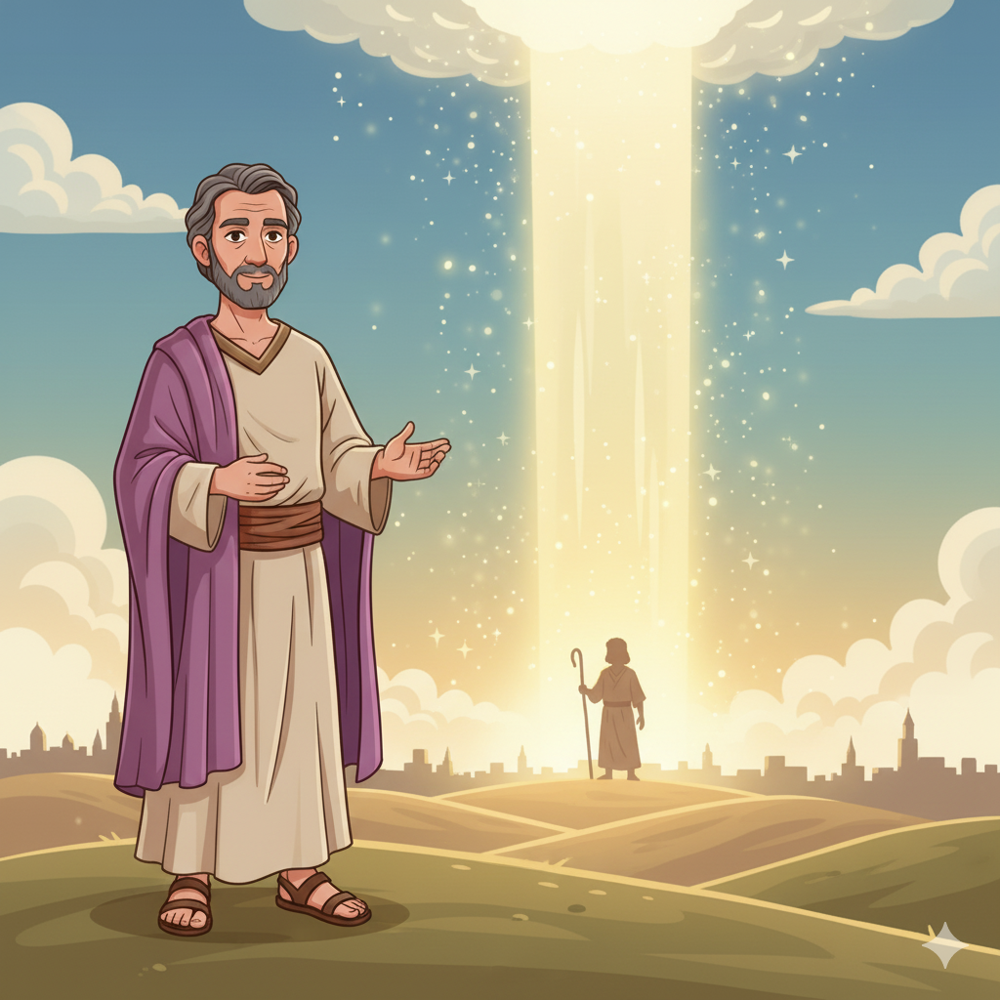

A Última Mensagem do Antigo Testamento — Um Resumo Visual para Crianças
Deus não quer apenas presentes e rituais,
Ele quer corações sinceros e leais!
Não adianta fingir adoração,
Deus vê bem fundo no seu coração!
Seja verdadeiro, seja fiel,
Pois Deus quer o seu amor, não o ritual!
📖 Malaquias 1:6-8
"Trazei os dízimos ao Senhor seu Deus,"
Disse Malaquias com voz que ecoa nos céus.
"Provai-me nisto", Deus desafiou,
"Abrirei as janelas do céu", prometeu com amor!
É o único lugar onde Deus nos pede uma prova —
Confie nele e veja a bênção que se aprova!
📖 Malaquias 3:10
Depois de 400 anos de silêncio profundo,
Um mensageiro vai preparar o mundo!
João Batista virá anunciar,
Que Jesus, o Sol da Justiça, vai chegar!
Malaquias fechou o Antigo Testamento,
Mas abriu a porta para o maior momento!
📖 Malaquias 4:2-5
"Para vós outros que temeis o Meu nome, nascerá o Sol da Justiça, e em Suas asas trará saúde."
📖 Malaquias 4:2
A última promessa profética do Antigo Testamento: um Sol que nasce trazendo cura e vida — e seu nome é Jesus!
O último profeta do Antigo Testamento! Seu nome em hebraico (מַלְאָכִי) é idêntico à palavra para "anjo/mensageiro" — o mesmo título que Deus usa para João Batista em Ml 3:1. É como se o mensageiro tivesse sido criado para anunciar o próximo mensageiro!
📜 Sua Missão:
"Eu vos amei, diz o Senhor." — Malaquias 1:2
Os sacerdotes deveriam ensinar o povo e honrar a Deus, mas estavam oferecendo animais cegos, coxos e doentes no altar — coisas que nem dariam ao governador humano! Com corações frios, poluíram o serviço de Deus.
⚠️ A Acusação de Deus:
"Oferecer isso ao vosso governador: porventura lhe agradaria?" — Ml 1:8
Malaquias profetiza que antes do grande Dia do Senhor, um mensageiro especial preparará o caminho. Esse personagem ainda não havia nascido — mas seria João Batista, 400 anos depois, cumprindo à risca essa profecia!
🎺 A Profecia:
"Eis que envio o Meu mensageiro para preparar o caminho diante de Mim." — Ml 3:1


Deus abre o livro com "Eu vos amei!" — mas o povo questiona: "Como assim?" Então Malaquias expõe os sacerdotes que oferecem animais defeituosos, como quem diz que o trabalho de Deus não vale nem o esforço. O amor de Deus desprezado pelos próprios líderes!
O povo traía suas esposas e se casava com mulheres que adoravam outros deuses. Mas no meio da correção, surge a promessa: Deus enviará um mensageiro que preparará o caminho — e o próprio Senhor virá ao templo!
O dízimo (3:10), o "livro de memórias" dos que temem a Deus (3:16), o Dia do Senhor como forno ardente (4:1) e o Sol da Justiça (4:2) para os que O temem. Termina com a promessa de "Elias" — João Batista — antes do grande Dia!
✨ Formato único:
6 "disputas" — Deus afirma, o povo questiona "Como assim?", Deus explica. Um diálogo real entre Deus e o povo!
Malaquias é o último livro antes de 400 anos de silêncio. Ele fecha o AT com uma promessa que o NT vai cumprir. É como o último capítulo de um livro que deixa o leitor ansioso para o próximo — e o próximo é o Evangelho de Mateus!
Malaquias 3:10 é o único lugar na Bíblia em que Deus explicitamente convida o ser humano a testá-Lo! "Provai-me nisto" — uma confiança que expressa o quanto Deus crê nas Suas próprias promessas de bênção.
"Sol da Justiça" (Ml 4:2) é uma das imagens mais poéticas de Jesus em todo o Antigo Testamento. Assim como o sol nasce depois da noite mais escura, Jesus nasceu depois dos 400 anos de silêncio — trazendo luz, calor e cura!


O povo havia voltado do exílio, reconstruído o templo com Ageu e Zacarias — mas já estava morno novamente! Malaquias quer sacudir corações que fazem religião sem amor. A adoração verdadeira nasce do coração, não do hábito!
Malaquias sabia que haveria um longo silêncio depois dele. Seu propósito era deixar o povo com esperança viva suficiente para durar 400 anos — como uma chama que não pode apagar antes de Jesus chegar!
As profecias de Ml 3:1 e 4:5-6 são o "trailer" do Novo Testamento. João Batista, Jesus e o Dia do Senhor são anunciados — o AT termina de cara voltada para o futuro!
"Recordai-vos da lei de Moisés, Meu servo."
📖 Malaquias 4:4 — A última mensagem antes do silêncio
Depois de Malaquias, Deus ficou 400 anos sem enviar nenhum profeta! Era como se o céu tivesse fechado. Foram 4 séculos de espera — e a próxima voz profética foi João Batista, abrindo o caminho para Jesus. Vale a pena esperar!
Malaquias usa um formato único: 6 "disputas" onde Deus faz uma afirmação, o povo questiona "Como assim?" e Deus responde com exemplos. É como um debate entre Deus e Seu povo — e Deus sempre tem a resposta certa! É o livro mais dialógico do AT.
Malaquias 3:16 menciona que Deus tem um "livro de memórias" onde Ele escreve o nome de todos que O temem e pensam Nele. Você sabia que Deus registra cada pensamento de fé que você tem? Cada oração, cada momento em que você O procura — Ele anota!

"Eis que envio o Meu mensageiro para preparar o caminho diante de Mim." Jesus mesmo identificou João Batista como o cumprimento dessa profecia: "Este é de quem está escrito: Eis que envio o Meu mensageiro diante da Tua face" (Mt 11:10). 400 anos depois, cumprido!
"Nascerá o Sol da Justiça, e em Suas asas trará saúde." Jesus disse: "Eu sou a luz do mundo" (Jo 8:12). Zacarias, pai de João Batista, ao profetizar sobre Jesus cita essa imagem: "a aurora que nasce do alto nos visitará" (Lc 1:78). O Sol que Malaquias prometeu nasceu em Belém!
O último versículo profético do AT promete "Elias" antes do Dia do Senhor. Jesus declarou: "Elias já veio, e não o conheceram... Então entenderam que falava de João Batista" (Mt 17:12-13). O AT termina pedindo por Elias — o NT começa com ele!
🔑 A Grande Conexão:
Malaquias fecha o AT com três promessas: o mensageiro (3:1), o Sol da Justiça (4:2) e Elias (4:5). O NT abre apresentando todos os três em João Batista — e então Jesus. O último versículo do AT dá a mão ao primeiro capítulo de Mateus!
O povo de Malaquias fazia as cerimônias, mas com o coração frio. Você já fez alguma coisa por Deus "no automático", sem coração? O que é diferente quando fazemos com amor de verdade?
Malaquias 3:16 diz que Deus tem um livro com o nome de quem O teme. Como você se sente sabendo que Deus registra cada momento em que você pensa Nele? Isso muda como você vive o seu dia?
O povo esperou 400 anos pelo cumprimento de Malaquias — e Jesus chegou! Há algo que você está pedindo a Deus e ainda não veio? Como a história de Malaquias te encoraja a continuar esperando?
Esta semana, escolha um momento de oração ou louvor e faça com total atenção e coração — sem pressa, sem celular, sem automático. Ofereça a Deus o seu melhor tempo e sua atenção plena!
Leia Malaquias 4:5-6 (o último versículo do AT) e depois leia Mateus 1:1 e 3:1-3 (o começo do NT com João Batista). Veja com seus próprios olhos como o AT termina pedindo e o NT começa cumprindo!
Malaquias prometeu um "Sol da Justiça" — Jesus! Acorde cedo um dia esta semana e observe o sol nascendo. Enquanto o sol aparece, ore: "Obrigado, Jesus, por ser o Sol da minha vida!" Tire uma foto e escreva Ml 4:2 embaixo.
Oséias, Joel, Amós, Obadias, Jonas, Miqueias, Naum, Habacuque, Sofonias, Ageu, Zacarias e Malaquias — todos visitados!
Trilho Kids | Desenvolvido com ❤️ para crianças © 2025